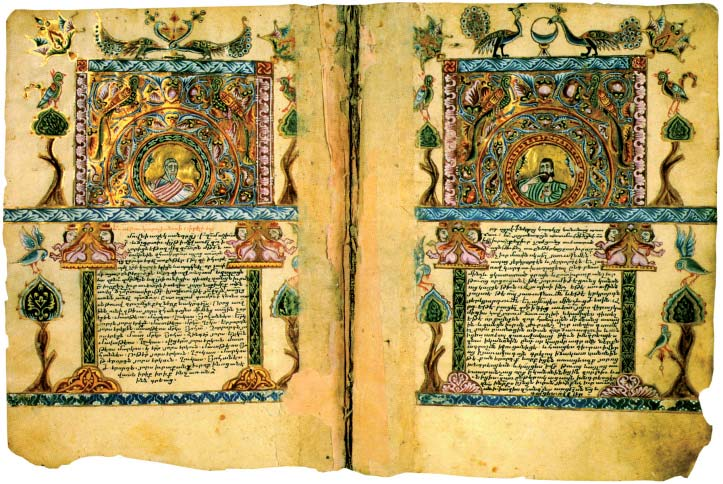

Una breve historia del libro
3. El libro medieval
En la Edad Media, la Iglesia fue la institución que desempeñó el papel predominante en cuanto a transmisión y conservación de la cultura. Los monasterios fueron los auténticos centros culturales donde se promovía la lectura, la copia y conservación de manuscritos. Estos centros religiosos, funcionaban como comunidades autosuficientes produciendo todo cuanto necesitaban, por ejemplo, el pergamino a partir de sus propias reses.
La producción de códices en los monasterios se realizaba en una gran sala llamada escriptorio (scriptorium) donde se sentaban los amanuenses o pendolarios (péndola, pluma de ave empleada en la escritura) para copiar los manuscritos, a partir de otros anteriores o al dictado de un lector situado en un estrado. La copia del códice era dirigida por el magíster, se copiaba la parte del texto convenida y se dejaban en blanco los espacios destinados a la iluminación (iniciales, títulos, orlas, viñetas, etc.). Los miniaturistas trazaban las figuras e ilustraciones y los iluminadores daban el color y, puesto que eran imágenes explicativas, la “luz” al texto. Al principio, los copistas realizaban el trabajo sobre sus rodillas, utilizando una tabla como soporte, pero pronto dispusieron de pupitres y herramientas propias (plumas, tintas, lápiz de grafito, etc.) para garantizar una mayor rapidez y calidad en sus trabajos. Las encuadernaciones, más o menos lujosas, consistían en un conjunto de cuadernos o pliegos que eran cosidos y después cubiertos por un cuero grueso o unas tapas de madera, que podían incluir telas e incrustaciones de piedras preciosas, orfebrería en oro y plata, marfil y otros elementos decorativos.
A medida que avanzaba la Edad Media se iba cuidando más el acabado y la presentación de los códices, se perfeccionó la caligrafía, las ilustraciones y los motivos ornamentales. La mayoría de los textos eran de temas religiosos: misales, cantorales, evangeliarios, libros de horas (Horarium), etc. Muestras ejemplares de textos iluminados son las copias de la obra “Comentarios al Apocalipsis de San Juan” (776), también denominados Beatos por ser obra del monje Beatus del monasterio de Liébana. En la actualidad se conservan 34 Beatos enteros con fantásticas ilustraciones de gran formato y colores brillantes, dotadas de una gran fuerza expresiva y que constituyen verdaderas obras maestras de la miniatura mozárabe y románica. Otro ejemplo destacado es el Libro de Kells, un evangeliario realizado en Irlanda en el siglo IX de gran belleza y perfección técnica.
En el siglo VIII surgió en Francia la escritura carolina, procedente de una de las academias fundadas por Carlomagno; constituía una muestra más del afán de este monarca por la unificación cultural de Europa. Este tipo de escritura se fue imponiendo poco a poco, comenzando por los documentos oficiales, y fue sustituyendo las llamadas “escrituras nacionales” europeas (merovingia, lombarda, visigótica, etc.), que se utilizaban desde el siglo VI. La letra carolina, de formas redondas y elegantes, fue la más usada hasta el siglo XII. A partir de entonces, sus rasgos comenzaron a hacerse más angulosos y fue evolucionando hacia la escritura gótica que apareció en el siglo XIII.
En los siglos XI y XII se asiste a un importante crecimiento económico en toda Europa que hizo prosperar un gran número de ciudades en las que se instalaron artesanos, comerciantes y diversos profesionales. La demanda de libros se fue haciendo cada vez mayor para el desempeño de diferentes funciones (burocráticas, notariales, comerciales, pedagógicas, etc.), comenzó crecer su comercialización y a ser objeto de préstamo o alquiler. Dos hechos fundamentales para el libro tienen lugar a partir estos siglos: la introducción en Europa del papel y las primeras universidades.
El papel fue inventado en el norte de China entorno al 150 a.C. y, aunque las mejores fibras para su fabricación eran el cáñamo y el algodón, los chinos acabaron utilizando principalmente el bambú, la morera, el yute, el lino y los tallos de arroz; debido a la gran demanda de las dos primeras para la producción textil. Desde su invención, pasaron más de mil años hasta su introducción en Europa por dos vías. Una de ellas fue la española a través de los árabes, que instalan el primer molino de papel, traído desde Fez, en Játiva (1150); la otra fue a través de Italia donde el papel, procedente de Egipto, llegó hasta Montefano y Venecia (1276). Inicialmente, el nuevo soporte fue acogido con recelo, pero al perfeccionarse su fabricación y obtenerse mejores acabados, se hacían cada vez más evidentes sus ventajas sobre los otros materiales: era más resistente que el papiro y mucho más barato y rápido de fabricar que el pergamino. De modo que su uso se generalizó a partir del siglo XV, sustituyendo definitivamente los otros dos soportes.
Las universidades que hoy conocemos, con profesores, estudiantes y grados académicos, tienen su origen en esta época. En la Alta Edad Media la educación descansaba casi exclusivamente en los centros monásticos y sus scholae, escuelas donde se formaba al clero y, de manera muy restringida, a algunos privilegiados de la población civil; pero el impulso educativo definitivo se dio en el siglo XII con el desarrollo de las escuelas catedralicias o episcopales (Chartres, Reims, París, Pisa, Siena, Oxford, Salamanca, etc.) y algunas municipales (Bolonia). Las escuelas catedralicias eran instituciones que se desarrollaban alrededor de las bibliotecas de las catedrales europeas con la función específica de formar al clero. A partir de la reforma gregoriana estas escuelas y sus docentes fueron adquiriendo cada vez mayor independencia, convirtiéndose en Studium Generale y finalmente en las primeras universidades medievales.
En cuanto a las bibliotecas cristianas, estas comienzan a aparecer a partir del siglo IV en los monasterios. El año 529 Benito de Nursia, fundador de la orden benedictina, establece una importante biblioteca en el monasterio de Montecasino, la cual sirvió de ejemplo para otras órdenes religiosas. En esta época, destacaron las bibliotecas monacales de Ratisbona, Fulda, Sant Gallen, etc.; la establecida por Carlomagno en Aquisgrán, y las inglesas de Canterbury, York, Glandstonbury, etc. Posteriormente, las bibliotecas capitulares surgen en los siglos IX y X con los primeros cabildos catedralicios (Chartres, Ruan, Reims, etc.). Desde finales del siglo XII y, sobre todo, a partir del siglo XIII las principales bibliotecas europeas estarán vinculadas a las universidades más prestigiosas. En el mundo musulmán, portador de una riquísima tradición cultural e intelectual, existía un alto grado de alfabetización, se adelantó en el conocimiento del papel y también creó importantes bibliotecas ligadas a las mezquitas y los centros de enseñanza coránica. Algunas de ellas, se contaron entre las mayores bibliotecas de su tiempo, concretamente, la de Bagdad y la de Córdoba.